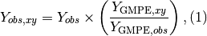
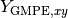
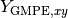
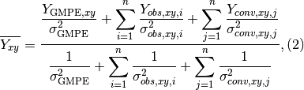
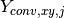
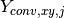

Technical Guide¶
Introduction¶
This ShakeMap Technical Guide is meant as the definitive source of information pertaining to the generation of ShakeMaps. Many of the initial descriptions in Wald et al. (1999a) are outdated and are superseded by this current report. Technical users of ShakeMap should also consult the User’s Guide for additional information pertaining to the format and range of available ShakeMap products.
Throughout this document, all parameters are italicized; specific parameters that can be configured within the ShakeMap software are indicated in parentheses. These configurable parameters are further described in the ShakeMap Software Guide.
ShakeMap Software Overview¶
ShakeMap is a collection of modules written in PERL and C. PERL is a powerful, freely available scripting language that runs on all computer platforms. The collection of PERL modules allows the processing to flow in discrete steps that can be run collectively or individually. Within the PERL scripts, other software packages are called, specifically packages that enable the graphics and much of the heavy grid-based computation. For instance, maps are made using the Generic Mapping Tool (GMT; Wessel and Smith, 1991), and the Postscript output from GMT is converted to JPEG format using ImageMagick or GraphicsMagick. In the design of ShakeMap, all components are built from freely available, open-source packages.
While the PERL language is not the fastest possible way to implement ShakeMap, we note that much of the heavy computational load is handled by highly optimized programs (usually written in C) that are called from within the PERL programs. Even for networks with hundreds of stations over large regions, ShakeMap takes only a minute or so to run on a modern computer (and much of that time is spent in product generation, e.g., converting PostScript images to JPEG—something that would be very difficult to optimize further).
To enable customization for specific earthquakes or for different regions, each ShakeMap module has an accompanying collection of configuration files. For example, in these files, one assigns the regional geographic boundaries and mapping characteristics to be used by GMT, which ground motion prediction equation (GMPE) to use, where and how to transfer the maps, email recipient lists, and so on. Specific details about the software and configuration files are described in detail in the Software Guide.
With standardization in GIS and web application interfaces (API), several aspects of the ShakeMap system could be accomplished within GIS applications, but the open-source, freely available nature of GMT combined with PERL scripting tools allows for a flexible and readily available ShakeMap software package. Nonetheless, we do generate a number of GIS product formats for that widespread user group as described in the User’s Guide.
Philosophy of Estimating and Interpolating Ground Motions¶
The overall strategy for the deployment of stations under the ANSS implementation plan relies on dense instrumentation concentrated in urban areas with high seismic hazards (USGS, 1999) and fewer stations in outlying areas. Based on this philosophy, and when fully deployed, maps generated in these urban regions are expected to be most accurate where the population at risk is the greatest, and therefore, where emergency response and recovery efforts will likely be most urgent and complex.
Even so, significant gaps in the observed shaking distribution will likely remain, especially in the transition from urban to more rural environments. Likewise, many critical facilities and lifelines are widely distributed, away from population centers and their dense seismic sensor networks. Thus, as a fundamental strategy for ShakeMap, we have developed algorithms to best describe the shaking in more remote areas by utilizing a variety of seismological tools. In addition to the areas without sufficient instrumentation where we would like to estimate motions to help assess the situation, and as a fail-safe backup, it is also useful to have these algorithms in place in the event of potential communication dropout from a portion of the network. The same tools are, in fact, beneficial for interpolating between observations (i.e., seismic stations) even within densely instrumented portions of the networks.
If there were stations at each of the tens of thousands of map grid points needed to adequately portray shaking, then the creation of shaking maps would be relatively simple. Of course, stations are not available for all of these grid points, and in many cases grid points may be tens of kilometers from the nearest reporting station. The overall mapping philosophy is then to combine information from individual stations, site amplification characteristics, and ground-motion prediction equations for the distance to the hypocenter (or to the causative fault) to create the best composite map. The procedure should produce reasonable estimates at grid points located far from available data while preserving the detailed shaking information available for regions where there are stations nearby.
It should be mentioned that mathematically, or algorithmically, geospatial interpolation can take many forms. There are some good reasons to employ geospatial kriging-with-a-trend). However, the complexity of the trends (GMPE, as well as inter-event bias corrections per Intensity Measure or IM), the use of multiply-weighted strong-motion and macroseimic data, and the real-time nature of the processing require other considerations. Effectively, the approach ShakeMap currently employs for interpolation (Worden et al., 2010), which employs a predetermined spatial correlation function, approaches kriging-with-a-trend mathematically. We address this possibility further in Future Directions.
Estimating motions where there are few stations, and then interpolating the recordings and estimates to a fine grid for mapping and contouring, requires several steps. In the following sections, we describe the process from input to final interpolated grid. Where beneficial, we illustrate the effects of key steps with example ShakeMap figures.
Recorded Ground-motion Parameters¶
Data Acquisition¶
ShakeMap requires estimates of magnitude, location, and (optionally, but preferably) shaking IMs at seismic stations. As such, ShakeMap has been interfaced with several types of seismic processing systems in wide use at numerous networks across the U.S. and around the world, including Antelope, SeisComP 3, and AQMS. The ShakeMap system, however, is a stand-alone software package and is really a passive consumer of seismic data. In other words, the ShakeMap software itself contains no data acquisition component. It is assumed that ShakeMap earthquake source information and parametric data are packaged for delivery to ShakeMap and that that delivery will trigger a ShakeMap run. The required format is in XML, as fully described in the Software Guide. Some programs are provided to convert ASCII text and other formats to the required input XML. It is assumed that station data delivered to ShakeMap are free-field sites that have been vetted by the contributing network. Each station must have stand-alone metadata describing its station location, contributing network, channel, and location code. While some additional outlier and data quality checks are performed within ShakeMap (see ShakeMap Processing), it is assumed that this is primarily the responsibility of the contributing seismic network.
For global and historic earthquake ShakeMap generation, we have developed scripts to preprocess various forms of seismic waveform (as well as macroseismic) data which are openly available around the world. For example, we provide a Python script getstrong run independently of ShakeMap, as described in the Software & Implementation Guide.
For illustrative purposes, we describe the data acquisition for the seismic system in Southern California, a component of the California Integrated Seismic Network (CISN). For perspective, as of 2015, there were nearly 800 real-time stations jointly operated with a collaboration between the USGS and the California Institute of Technology (Caltech). In addition, the California Geological Survey (CGS) contributes nearly 350 strong-motion stations in near real-time, utilizing an automated telephone dial-up procedure (Shakal et al, 1998), and the USGS National Strong Motion Instrumentation Program (NSMP) contributes dial-up station parameters as well, with nearly 50 stations in Southern California alone. Lastly, the “NetQuakes” program, a relatively low-cost seismograph that the USGS installs in homes, businesses, buildings, and schools, contributes close to 100 additional stations in Southern California.
Generation of ShakeMap in Southern California is automatic, triggered by the event associator of the seismic network. Within the first two minutes of an earthquake, ground- motion parameters are available from the USGS-Caltech component of the network, and within several minutes most of the important near-source CGS and NSMP stations contribute; a more complete CGS and NSMP contribution is available within approximately ten minutes of an event. Initial maps are made with the real-time component of CISN as well as any of the available dial-sites, and they are updated automatically as more data are acquired.
Derived Parametric Ground-motion Values¶
Parametric data from stations serving ShakeMap should include peak ground acceleration (PGA), peak ground velocity (PGV), and peak response spectral acceleration amplitudes (at 0.3, 1.0, and 3.0 sec). Often, parametric values are derived continuously, using recursive time-domain filtering as described by Kanamori et al. (1999). Otherwise parameters are derived from post-processing as described by Shakal et al. (1998) and Converse and Brady (1992).
ShakeMap will run successfully with no (or limited) parametric data, for example if only PGA values are available at each station. Default logic is employed to provide reasonable behavior for estimating intensities from PGA alone, bias correction, and interpolation (see following sections). Likewise, for smaller-magnitude earthquakes, spectral values can be noisy, so operators often omit the generation spectral maps below a lower magnitude threshold (about M4); this can be done with simple command-line options.
For all maps and products, the motions depicted are peak values as observed; that is, the maximum value observed on the two horizontal components of motion. Many engineers are used to analyses employing the geometric mean of the horizontal peak-ground motions, but that is not done for ShakeMap. More description and justification for this strategy is given in the section Use of Peak Values Rather than Mean. It should be noted, however, that conversions from peak to geometric mean (or other measures) are available (e.g., Beyer and Bommer, 2006).
Macroseismic Intensity¶
ShakeMap also (optionally) accepts input data in the form of observed macroseismic intensity (MMI, MCS, etc.). As with peak ground motion parameters from seismic stations, ShakeMap expects specific file formats (XML) and site metadata for macroseismic data (see the Software Guide).
Intensity data can fill important gaps where ground-motion recordings are not available, and often provide the only control in sparsely instrumented areas. This is particularly true for historic earthquakes, for which macroseismic data provide important constraints on shaking intensities. As later discussed, the ShakeMap Atlas (Allen et al., 2008, 2009a; Garcia et al., 2012a) is a collection of important historic earthquake shaking maps which are now widely used for scientific analyses and for loss model calibration (e.g., Wald et al., 2008; Jaiswal and Wald, 2010; Pomonis and So, 2011).
The most common source for immediate post-earthquake intensity data is the USGS’s “Did You Feel It?” (DYFI) system (Wald et al., 2011), though similar systems are available in several countries. However, traditionally assigned intensities may be used as well. DYFI data can be programmatically retrieved from the USGS’s database and formatted for ShakeMap input using the ShakeMap program getdyfi, making it especially easy to incorporate into the ShakeMap data input stream.
Macroseismic intensity data can also be an important constraint on peak ground motions, since ground motion amplitudes can be derived from intensity through the use of a suitable Ground-Motion/Intensity Conversion Equation (GMICE). Because a GMICE represents a statistical (probabilistic) relationship, the conversion to and from intensity has a higher uncertainty than direct ground-motion observation. ShakeMap accounts for this higher uncertainty by down- weighting converted observations in the interpolation process, as discussed in the Interpolation section.
A variety of GMICEs are available with the ShakeMap software distribution, both for MMI—based on Wald, et al. (1999b), Worden, et al. (2012), and Atkinson and Kaka (2007), among others—and for MCS—based on Faenza and Michilini (2010). Operators are encouraged to explore the need to develop their own relationships based on data covering their own operational area as GMICEs have been shown to have regional dependencies (e.g., Caprio et al., 2015). A complete list of GMICEs currently employed by ShakeMap is provided in the Software Guide.
We have implemented a convention for maps and regression plots that seismic stations are represented with triangles and macroseismic data are depicted with circles (see Figure 1, for example). This convention is forward-looking: not all seismic networks were currently following this convention at the time of this writing.

Figure 1: Intensity ShakeMap from the 2014 M6.0 American Canyon (Napa Valley), CA earthquake. Strong motion data (triangles) and intensity data (circles) are color-coded according to their intensity value, either as observed (for macroseismic data) or as converted by Wald et al. (1999b) as shown in the legend. The north-south black line indicates the fault location, which nucleated near the epicenter (red star). Note: Map Version Number reflects separate offline processing for this Manual.
shows a different representation of the intensity map on the newer, interactive maps on the USGS web site.

Figure 2: Intensity ShakeMap from the 2006 M6.7 Kahola Bay, HI earthquake. Contours indicate intensities; strong motion data (triangles) and intensity data (circles) are color- coded according to their intensity value, either as observed (for macroseismic data) or as converted by Worden et al. (2012). Inset on lower map shows pop-up station information.
Ground Motion and Intensity Predictions¶
In areas distant from the control of seismic instrumentation or reported intensity, ground motions must be estimated using the available earthquake source parameters and GMPEs or Intensity Prediction Equations (IPEs). GMPEs are available for a wide range of magnitudes, source mechanisms, and tectonic settings. IPEs are still comparatively uncommon, with only a handful of published relations, focused on active tectonic and stable shield (cratonic) environments (e.g., Atkinson and Wald, 2007; Allen et al., 2012). To supplement the available IPEs, we have developed a “virtual IPE” which is a combination of the operator’s selected GMPE and Ground Motion/Intensity Conversion Equation (GMICE), which work together to present the same interface and behaviors as a direct IPE, while being available for a wider range of regional and tectonic environments.
We describe the way ShakeMap employs ground-motion and intensity predictions in ShakeMap Processing. An up-to-date list of the GMPEs and IPEs available for ShakeMap can be found in the Software Guide.
ShakeMap Processing¶
As discussed in the User’s Guide, ShakeMap produces a range of output products. However, ShakeMap’s primary outputs are grids of interpolated ground motions, from which the other grids, contours, and maps are derived. Interpolated grids are produced for PGA, PGV, macroseismic intensity (we will hereafter refer to macroseismic intensity as “MMI” for Modified Mercalli Intensity, but other intensity measures are supported), and (optionally) pseudo-spectral accelerations at 0.3, 1.0, and 3.0 sec. Attendant grids of shaking-parameter uncertainty and Vs30, are also produced as separate products or for later analyses of each intermediate processing step, if so desired.
The ShakeMap program responsible for producing the interpolated grids is called “grind”. This section is a description of the way grind works, and some of the configuration parameters and command-line flags that control specific functionality. (For a complete description of configuring and running grind, see the Software Guide and the configuration file grind.conf.)
Below is an outline of the ShakeMap processing workflow. Figure 3 provides a schematic of the key processing steps.
- Data Preparation
- Remove flagged stations
- Convert intensities to peak ground motions (PGMs) and vice versa
- Correct data to “rock” using Vs30-based amplification terms
- Remove estimated basin response (optional)
- Correct earthquake bias with respect to the chosen GMPE
- Remove the effect of directivity (optional)
- Compute bias
- Flag outliers
- Repeat the previous two steps until no outliers are found
- Create biased GMPE estimates at each station location and for the entire output grid (optionally, apply directivity)
- Interpolate ground motions to a uniform grid
- Amplify ground motions
- Basin amplifications (optional)
- Vs30 site amplifications

Figure 3: A schematic of the basic ShakeMap ground motion interpolation scheme.
The sections that follow provide a more complete description of the processing steps outlined above.
Data preparation¶
The first step in processing is the preparation of the parametric data. As discussed in the Software Guide, ground motion amplitudes are provided to ShakeMap in the form of Extended Markup Language (XML) files. Note that we describe here the behavior of grind with respect to the input XML file(s). The programs that produce the input XML (be it db2xml, others, or the network operator’s custom codes) will have their own rules as to what is included in the input.
In our presentation here, the term “station” refers to a single seismographic station denoted with a station ID (i.e., a code or number). In current practice, station IDs often consist of a network identifier concatenated (using a “.”) with the station ID (e.g., “CI.JVC” or “CE.50281”).
Each station may have one or more “channels,” each of which is denoted by an ID code (often called a “seedchan”). The last character of the ID is assumed to be the orientation of the instrument (east-west, north-south, vertical). ShakeMap only uses the peak horizontal component. Thus, ShakeMap does not consider amplitudes with a “Z” as the final character, though it does carry the vertical amplitude values through to the output station files. Note that some stations in some networks are given orientations of “1”, “2”, and “3” (rather than the more standard “N”, “E”, and “Z”), where any of the components may be vertical. Because of the non-standardized nature of these component labels, ShakeMap does not attempt to discern their orientation and assumes that they are all horizontal. This can lead to inaccuracies—it becomes the network operator’s responsibility to ensure that the vertical channel is either excluded or labeled with a “Z” before the data are presented to ShakeMap. Similarly, many networks co-locate broadband instruments with strong-motion instruments and produce PGMs for both. Again, it is the network operator’s responsibility to select the instrument that best represents the data for the PGMs in question. Aside from the station flagging discussed below, ShakeMap makes no attempt to discern which of a set of components is superior, it will simply use the largest value it finds (i.e., if ShakeMap sees channels “HNE” and “HHE” for the same station, it will simply use the larger of the two PGMS without regard to the possibility that one may be off-scale or below-noise).
Currently, ShakeMap is location-code agnostic. Because the current SNCL (Station, Network, Channel, Location) specification defines the location code as a pure identifier (i.e., it should have no meaning), it is impossible to anticipate all the ways it may be used. Therefore, if a network-station combo has multiple instruments at multiple locations, the data provider should identify each location as a distinct station for ShakeMap XML input purposes (by, for example, including the location code as part of the station identifier, N.S.L—e.g., ‘CI.JVC.01’). If the network uses the location codes in another manner, it is up to the operator to generate a station/component data structure that ShakeMap will handle correctly.
Finally, each channel may produce one or more amplitudes (e.g., PGA, PGV, pseudo- spectral acceleration). Note that these amplitudes should always be supplied by the network as positive values, regardless of the direction of the peak motion. The amplitudes for all stations and channels are collected and reported, but only the peak horizontal amplitude of each ground-motion parameter is used by ShakeMap.
The foregoing is not intended to be a complete description of the requirements for the input data. Please see the relevant section of the Software Guide for complete information.
Flagged Stations¶
If the “flag” attribute of any amplitude in the input XML is non-null and non-zero, then all components of that station are flagged as unusable. The reasoning here is that for a given data stream, the typical network errors (telemetry glitch, incomplete data, off-scale or below-noise data, etc.) will affect all of the parameters (as they are typically all derived from the same data stream), and it is therefore impossible to determine the peak horizontal component of any ground-motion parameter. This restriction is not without its detractors, however, and we may revisit it at a future date.
MMI data are treated in much the same way; however, there is typically only one “channel” and one parameter (i.e., intensity).
ShakeMap presents flagged stations as open, unfilled triangles on maps and on regression plots. In contrast, unflagged stations are color coded by network or, optionally, by their amplitudes via their converted intensity value, as shown in Figure 4. Flagged stations are also indicated as such within tables produced for ShakeMap webpage consumption, e.g., the stations.xml file.

Figure 4: Peak acceleration ShakeMap from the Aug. 24, 2014, M6.0 American Canyon (Napa Valley), California earthquake. Strong motion data (triangles) and intensity data (circles) are color-coded according to their intensity value, either as observed (for macroseismic data) or as converted by Wald et al. (1999b) as shown in the legend. The north-south black line indicates the fault location, which nucleated near the epicenter (red star). Note: Map Version Number reflects separate offline processing for this Manual.
Converting MMI to PGM and PGM to MMI¶
Once the input data have been read and peak amplitudes assigned for each station (which may be null if the data are flagged), intensities are derived from the peak amplitudes and peak amplitudes are derived from the intensities using the GMICEs configured (see the parameters ‘pgm2mi’ and ‘mi2pgm’ in grind.conf). Small values of observed intensities (MMI < III for PGA, and MMI < IV for other parameters) are not converted to PGM for inclusion in the PGM maps. Our testing indicated that including these low intensities introduced a significant source of error in the interpolation, likely due to the very wide range (and overlap) of ground motions that can produce MMIs lower than III or IV.
Site Corrections¶
Near-surface conditions can have a substantial effect on ground motions. Ground motions at soft-soil sites, for instance, will typically be amplified relative to sites on bedrock. Because we wish to interpolate sparse data to a grid over which site characteristics may vary greatly, we first remove the effects of near-surface amplification from our data, perform the interpolation to a uniform grid at bedrock conditions, and then apply the site amplifications to each point in the grid, based on each site’s characteristics.
A commonly used proxy used to account for site effects (e.g., Borcherdt, 1994) is Vs30, the time-averaged shear wave velocity to 30 meters depth. Vs30 is also a fundamental explanatory variable for modern GMPEs (e.g., Abrahamson et al., 2014). Since the use of GMPEs for ground motion estimation is fundamental to ShakeMap, we follow this convention and use Vs30-based amplification terms to account for site amplification. In Future Directions, we suggest alternative approaches that require additional site information beyond Vs30.
Site Characterization Map¶
Each region wishing to implement ShakeMap should have a Vs30 map that covers the entire area they wish to map. Using the Jan. 17, 1994, M6.7 Northridge, California earthquake ShakeMap as an example (Figure 5), we present, in Figure 6, the Vs30 map used. Until 2015, the California site-condition map was based on geologic base maps as introduced by Wills et al. (2000), and modified by Howard Bundock and Linda Seekins of the USGS at Menlo Park (H. Bundock, written comm., 2002). The Wills et al. map extent is that of the State boundary; however, ShakeMap requires a rectangular grid, so fixed velocity regions were inserted to fill the grid areas representing the ocean and land outside of California. Unique values were chosen to make it easy to replace those values in the future. The southern boundary of the Wills et al. map coincides with the U.S.A./Mexico border. However, due to the abundant seismic activity in Imperial Valley and northern Mexico, we have continued the trend of the Imperial Valley and Peninsular Ranges south of the border by approximating the geology based on the topography; classification BC was assigned to sites above 100m in elevation and CD was assigned to those below 100m. This results in continuity of our site correction across the international border.

Figure 5: PGA ShakeMap reprocessed with data from the 1994 M6.7 Northridge, CA earthquake with a finite fault (red rectangle), strong motion data (triangles), and intensity data (circles). Stations and macroseismic data are color-coded according to their intensity value, either as observed (for macroseismic data) or as converted by Worden et al. (2012) and indicated by the scale shown.

Figure 6: Vs30 Map produced as a byproduct of ShakeMap for the 1994 M6.7 Northridge, CA earthquake. The finite fault is shown as a red rectangle; strong motion data (triangles) and intensity data (circles) are transparent to see site conditions. The legend indicates the range of color-coded Vs30 values in m/sec.
Other ShakeMap operators have employed existing geotechnically- or geologically-based Vs30 maps, or have developed their own Vs30 map for the area covered by their ShakeMap. For regions lacking such maps, including most of globe, operators often employ the approach of Wald and Allen (2007), revised by Allen and Wald, (2009b), which provides estimates of Vs30 as a function of more readily available topographic slope data. Wald and Allen’s slope-based Vs30-mapping proxy is employed by the Global ShakeMap (GSM) system.
Recent developments by Wald et al. (2011d) and Thompson et al. (2012; 2014) provide a basis for refining Vs30 maps when Vs30 data constraints are abundant. Their method employs not only geologic units and topographic slope, but also explicitly constrains map values near Vs30 observations using kriging-with-a-trend to introduce the level of spatial variations seen in the Vs30 data (Thompson et al., 2014). An example of Vs30 for California using this approach is provided in Figure 7. Thompson et al. describe how differences among Vs30 base maps translate into variations in site amplification in ShakeMap.

Figure 7: Revised California Vs30 Map (Thompson et al., 2014). This map combines geology, topographic slope, and constraints of map values near Vs30 observations using kriging-with-a-trend. Inset shows Los Angeles region, with Los Angeles Basin indicating low Vs30 velocities.
ref:Worden et al. (2015) <worden2015> further consolidate readily available Vs30 map grids used for ShakeMaps at regional seismic networks of the ANSS with background, Thompson et al.’s California Vs30 map, and the topographic-based Vs30 proxy to develop a consistently scaled mosaic of Vs30 maps for the globe with smooth transitions from tile to tile. It is anticipated that aggregated Vs30 data provided by Yong et al. (2015) will facilitate further map development of other portions of the U.S.
Amplification Factors¶
ShakeMap provides two operator-selectable methods for determining the factors used to amplify and de-amplify ground motions based on Vs30. The first is to apply the frequency- and amplitude-dependent factors, such as those determined by Borcherdt (1994) or Seyhan and Stewart (2014). By default, amplification of PGA employs Borcherdt’s short-period factors; PGV uses mid-period factors; and PSA at 0.3, 1.0, and 3.0 sec uses the short-, mid-, and long-period factors, respectively. The second method uses the site correction terms supplied with the user’s chosen GMPE (if such terms are supplied for that GMPE). The differences between these choices and their behavior with respect to other user-configurable parameters are discussed in the Software & Implementation Guide.
Correct Data to “Rock”¶
If, as is usually the case, the operator has opted to apply site amplification (via the -qtm option to grind), the ground-motion observations are corrected (de-amplified) to “rock”. (The Vs30 of “rock” is specified with the parameter ‘smVs30default’ in grind.conf.) See the section “Site Corrections” in the Software Guide for a complete discussion of the way site amplifications are handled and the options for doing so.
Note that Borcherdt-style corrections do not handle PGV directly, so PGV is converted to 1.0 sec PSA (using Newmark and Hall, 1982), (de)amplified using the mid-period Borcherdt terms, and then converted back to PGV. The Newmark and Hall conversion is entirely linear and reversible, so while the conversion itself is an approximation, no bias or uncertainty remains from the conversion following a “round trip” from site to bedrock back to site.
Because there are no well-established site correction terms for MMI, when Borcherdt- style corrections are specified, ShakeMap converts MMI to PGM, applies the (de)amplification to PGM using the Borcherdt terms, then converts the PGMs back to MMI.
Figure 8 and Figure 9 show shaking estimates before site correction (upper left) and after (upper right). Without site correction, ground motion attenuation is uniform as a function of hypocentral distance; with site correction, the correlation of amplitudes with the Vs30 map (and also topography) are more apparent. This distinction is important: often complexity in ShakeMap’s peak ground motions and intensity patterns are driven by site terms, rather than variability due to shaking observations.

Figure 8: ShakeMap peak ground acceleration maps for the 1994 M6.7 Northridge, CA earthquake without strong motion or intensity data. A) Hypocenter only, without site amplification; B) Hypocenter, site amplification added; C) Hypocenter only, but with median distance correction added; and D) Finite fault (red rectangle) added.

Figure 9: ShakeMap intensity maps for the 1994 M6.7 Northridge, CA earthquake without strong motion or intensity data. A) Hypocenter only, without site amplification; B) Hypocenter, site amplification added; C) Hypocenter only, but with median distance correction added; and D) Finite fault (red rectangle) added.
As the final step in correcting the observations to “rock,” if basin amplification is specified (with the -basement flag), the basin amplifications are removed from the PGM data. Currently, basin amplifications are not applied to MMI.
Event Bias¶
ShakeMap uses ground motion prediction equations (GMPEs) and, optionally, intensity prediction equations (IPEs) to supplement sparse data in its interpolation and estimation of ground motions. If sufficient data are available, we compute an event bias that effectively removes the inter-event uncertainty from the selected GMPE (IPE). This approach has been shown to greatly improve the quality of the ShakeMap ground motion estimates (for details, see Worden et al., 2012).
The bias-correction procedure is relatively straightforward: the magnitude of the earthquake is adjusted so as to minimize the misfit between the observational data and estimates at the observation points produced by the GMPE. If the user has chosen to use the directivity correction (with the -directivity flag), directivity is applied to the estimates.
In computing the total misfit, primary observations are weighted as if they were GMPE predictions, whereas converted observations are down-weighted by treating them as if they were GMPE predictions converted using the GMICE (i.e., primary observations are given full weighting, whereas the converted observations are given a substantially lower weight.) Once a bias has been obtained, we flag (as outliers) any data that exceed a user- specified threshold (often three times the nominal sigma of the GMPE). The bias is then recalculated and the flagging is repeated until no outliers are found. The flagged outliers are then excluded from further processing (though the operator can choose to modify the outlier criteria or impose their inclusion).
(There are a number of configuration parameters that affect the bias computation and the flagging of outliers—see the Software Guide and grind.conf for a complete discussion of these parameters.)
The biased GMPE is then used to create estimates for the entire output grid. If the user has opted to include directivity effects, they are applied to these estimates. See the Interpolation section for the way the GMPE-based estimates are used.
The Northridge earthquake ShakeMap provides an excellent example of the effect of bias correction. Overall, the ground motions for the Northridge earthquake exceed average estimates of existing GMPEs—in other words, it has a significant positive inter-event bias term (see Figure 10 and Figure 11).

Figure 10: Plot of Northridge earthquake PGAs as a function of distance. The triangles show recorded ground motions; the red line shows the unbiased Boore and Atkinson (2008) (BA08) GMPE; the dark green lines show BA08 following the bias correction described in the text; the faint green lines show the biased GMPE +/- three standard deviations.

Figure 11: Plot of Northridge earthquake PGVs as a function of distance. The triangles show recorded ground motions; the red line shows the unbiased Boore and Atkinson (2008) (BA08) GMPE; the dark green lines show BA08 following the bias correction described in the text; the faint green lines show the biased GMPE +/- three standard deviations.
The ShakeMap bias correction accommodates this behavior once a sufficient number of PGMs or intensity data are added (e.g., Figure 12 and Figure 13 A and C, show before and after bias correction, respectively). The addition of the stations provides direct shaking constraints at those locations; the bias correction additionally affects the map wherever ground motion estimates dominate (i.e., away from the stations).

Figure 12: PGA ShakeMaps for the Northridge earthquake, showing effects of adding strong motion and intensity data. A) Finite fault only (red rectangle), no data; B) Strong motion stations (triangles) only; C) Finite Fault and strong motion stations (triangles); D) Finite Fault strong motion stations (triangles) and macroseismic data (circles). Notes: Stations and macroseismic observations are color-coded to their equivalent intensity using Worden et al. (2012).

Figure 13: Intensity ShakeMaps for the Northridge earthquake, showing effects of adding strong motion and intensity data. A) Finite fault only (red rectangle), no data; B) Strong motion stations (triangles) only; C) Finite Fault and strong motion stations (triangles); D) Finite Fault strong motion stations (triangles) and macroseismic data (circles). Notes: (D) is the best possible constrained representation for this earthquake. The finite fault model without data (A) is not bias-corrected; for the Northridge earthquake, the inter-event biases are positive, indicating higher than average ground shaking for M6.7; thus, the unbiased map (A) tends to under-predict shaking shown in the data-rich, best-constrained map (D).
Interpolation¶
The interpolation procedure is described in detail in Worden et al. (2010). Here we summarize it only briefly.
To compute an estimate of ground motion at a given point in the latitude-longitude grid, ShakeMap finds an uncertainty-weighted average of 1) direct observations of ground motion or intensity, 2) direct observations of one type converted to another type (i.e., PGM converted to MMI, or vice versa), and 3) estimates from a GMPE or IPE. Note that because the output grid points are some distance from the observations, we use a spatial correlation function to obtain an uncertainty for each observation when evaluated at the outpoint point. The total uncertainty at each point is a function of the uncertainty of the direct observations obtained with the distance-to-observation uncertainty derived from the spatial correlation function, and that of the GMPE or IPE.
In the case of direct ground-motion observations, the uncertainty at the observation site is assumed to be zero, whereas at the “site” of a direct intensity observation, it is assumed to have a non-zero uncertainty due to the spatially averaged nature of intensity assignments. The uncertainty for estimates from GMPEs (and IPEs) is the stated uncertainty given in the generative publication or document. The GMPE uncertainty is often spatially constant, but this is not always the case, especially with more recent GMPEs.
For converted observations, a third uncertainty is combined with zero-distance uncertainty and the uncertainty due to spatial separation: the uncertainty associated with the conversion itself (i.e., the uncertainty of the GMICE). This additional uncertainty results in the converted observations being down-weighted in the average, relative to the primary observations.
Because a point in the output may be closer to or farther from the source than a nearby contributing observation, the observation is scaled by the ratio of the GMPE (or IPE) estimates at the output point and the observation point:

where  is the observation, and
is the observation, and  and  are the ground-motion predictions
at the observation point and the point (x,*y*), respectively. This scaling is also applied to
the converted observations with the obvious substitutions. Note that the application of
this term also accounts for any geometric terms (such as directivity or source geometry)
that the ground-motion estimates may include.
and  are the ground-motion predictions
at the observation point and the point (x,*y*), respectively. This scaling is also applied to
the converted observations with the obvious substitutions. Note that the application of
this term also accounts for any geometric terms (such as directivity or source geometry)
that the ground-motion estimates may include.
The formula for the estimated ground motion at a point (x,*y*) is then given by:

where and  are the amplitude and variance, respectively, at the point (x,*y*)
as given by the GMPE,
are the amplitude and variance, respectively, at the point (x,*y*)
as given by the GMPE,  are the observed amplitudes scaled to the point (x,*y*),
are the observed amplitudes scaled to the point (x,*y*),
 is the variance associated with observation i at the point (x,*y*),  are the
converted amplitudes scaled to the point (x,*y*), and
is the variance associated with observation i at the point (x,*y*),  are the
converted amplitudes scaled to the point (x,*y*), and  is the variance associated
with converted observation j at the point (x,*y*).
is the variance associated
with converted observation j at the point (x,*y*).
We can then compute the estimated IM (Equation 2) for every point in the output grid. Note that the reciprocal of the denominator of Equation 2 is the total variance at each point—a useful byproduct of the interpolation process. Again, Worden et al. (2010) provides additional details.
Amplify Ground Motions¶
At this point, ShakeMap has produced interpolated grids of ground motions (and intensities) at a site class specified as “rock.” If the operator has specified the -basement option to grind (and supplied the necessary depth-to-basement file), a basin amplification function (currently Field et al., 2000) is applied to the grids. Then, if the user has specified -qtm, site amplifications are applied to the grids, creating the final output.
Differences in Handling MMI¶
The processing of MMI is designed to be identical to the processing of PGM; however, a few differences remain:
- As of this writing, there are no spatial correlation functions available for MMI. We are working on developing one, but it is not complete. We currently use the spatial correlation function for PGA as a proxy for MMI, though this approach is not particularly satisfying.
- Because there are relatively few IPEs available at this time, we have introduced the idea of a virtual IPE (VIPE). If the user does not specify an IPE in grind.conf, grind will use the configured GMPE in combination with the GMICE to simulate the functionality of an IPE. In particular, the bias is computed as a magnitude adjustment to the VIPE to produce the best fit to the intensity observations (and converted observations) as described in Event Bias; and the uncertainty of the VIPE is the combined uncertainty of the GMPE and the GMICE.
- As mentioned above, intensity observations are given an inherent uncertainty because of the nature of their assignment. Our research has shown that this uncertainty amounts to a few tenths of an intensity unit, but it varies with the number of responses within the averaged area. Research in this area is incomplete, and intensity data can contain both “Did You Feel It?” data and traditionally assigned intensities. Because of these considerations, we currently use a conservative value of 0.5 intensity units for the inherent uncertainty.
- The directivity function we use (Rowshandel, 2010) does not have terms for intensity. This is not a problem when using the VIPE, since we can apply the directivity function to the output of the encapsulated GMPE before converting to intensity. But when a true IPE is used, we instantiate the VIPE and compute two intensity grids: one with and one without directivity activated. We then subtract the former from the latter and add the results to the output of the IPE. We use the same procedure when creating estimates at observation locations for computing the bias.
- As mentioned above, we currently have no function for applying basin amplification to the intensity data. We hope to remedy this shortly with a solution similar to item 4, above, where we apply the basin effects through a VIPE. In practice, the main areas where basin depth models are available are also those within which station density is great (e.g., Los Angeles and San Francisco, California).
Fault Considerations¶
Small-to-moderate earthquakes can be effectively characterized as a point source, with distances being calculated from the hypocenter (or epicenter, depending on the GMPE). But accurate prediction of ground motions from larger earthquakes requires knowledge of the fault geometry. This is because ground motions attenuate with distance from the source (i.e. fault), but for a spatially extended source, that distance can be quite different from the distance to the hypocenter. Most GMPEs are developed using earthquakes with well-constrained fault geometry, and therefore are not suitable for prediction of ground motions from large earthquakes when only a point source is available. As discussed in the next section, we handle this common situation by using terms that modify the distance calculation to accommodate the unknown fault geometry. We also allow the operator to specify a finite fault, as discussed in sections Fault Dimensions and Directivity.
Median Distance and Finite Faults¶
As discussed in the Software Guide, the user may specify a finite fault to guide the estimates of the GMPE, but often a fault model is not available for some time following an earthquake. For larger events, this becomes problematic because the distance-to-source term ShakeMap provides to the GMPE in order to predict ground motions comes from the hypocenter (or epicenter, depending on the GMPE) rather than the actual rupture plane (or its surface projection), and for a large fault, these distances can be quite different. For a non-point source, in fact, the hypocentral distance can equal the closest distance, but it can also be significantly greater than the closest distance.
ShakeMap addresses this issue by introducing the concept of median distance. Following a study by EPRI (2003), we assume that an unknown fault of appropriate size could have any orientation, and we derive the distance that produces the median ground motions of all the possible fault orientations that pass through the hypocenter. (Thus, the term “median distance” is a bit of a misnomer; it is more literally “distance of median ground motion.”) Thus, for each point for which we want ground motion estimates, we compute this distance and use it as input to the GMPE. We also adjust the uncertainty of the estimate to account for the larger uncertainty associated with this situation. This feature automatically applies for earthquake magnitudes >= 5, but may be disabled with the grind flag -nomedian.
Ideally, GMPE developers would always regress not only for fault distance, but also for hypocentral distance. If this were done routinely, we would be able to initially use the hypocentral-distance regression coefficients and switch to fault-distance terms as the fault geometry was established. The median-distance approximation described above could then be discarded.
Bommer and Akkar (2012) have made the case for deriving both sets of coefficients: “The most simple, consistent, efficient and elegant solution to this problem is for all ground-motion prediction equations to be derived and presented in pairs of models, one using the analysts’ preferred extended source metric ... —and another using a point- source metric, for which our preference would be hypocentral distance, Rhyp”. Indeed, Akkar et al. (2014) provide such multiple coefficients for their GMPEs for the Middle East and Europe. However, despite its utility, this strategy has not been widely adopted among the requirements for modern GMPEs (e.g., Powers et al., 2008; Abrahamson et al., 2008; 2014).
The hypocentral- or median-distance correction is not a trivial consideration. Note that for Northridge, even when the fault is unknown and there are no data, the median-distance correction (Figure 8 and Figure 9, panels B and C) brings the shaking estimates more in line with those constrained by knowledge of the fault. As mentioned earlier, the shaking for this event exhibits a positive inter-event bias term, so even with the fault location constrained, estimates still tend to under-predict the actual recordings, on average.
While the effect of this correction for the Northridge earthquake example is noticeable, for events with larger finite faults, the median-distance correction becomes crucial while awaiting constraints on rupture geometry from finite-fault modeling, aftershocks, and surface slip.
Fault Dimensions¶
The Software Guide describes the format for specifying a fault. Essentially, ShakeMap faults are one or more (connected or disconnected) planar quadrilaterals. The fault geometry is used by ShakeMap to compute distance-to-source for the GMPE, IPE, and GMICE as well as to visualize the fault geometry in map view (for example, see red-line rectangles in Figure 8 and Figure 9). This distance is either to the surface projection of the fault (for the so-called Joyner-Boore, or JB, distance), or to the rupture plane, depending on the requirements of the prediction equation. In this case, the dimensions of the Northridge rupture are constrained from analyses of the earthquake source (e.g., Wald et al., 1996).
While a finite fault is important for estimating the shaking from larger earthquakes, it is typically not necessary to develop an extremely precise fault model, or to know the rupture history. One or two fault planes usually suffice, except for very large or complex surface-rupturing faults. In the immediate aftermath of a large earthquake, a first-order fault model based on tectonic environment, known faults, aftershock distribution, and empirical estimates based on the magnitude (e.g., Wells and Coppersmith, 1994) is often sufficient to greatly improve the ShakeMap estimates in poorly instrumented areas. In many cases, this amounts to an “educated guess”, and seismological expertise and intuition are extremely helpful. Later refinements to the faulting geometry may or may not fundamentally change the shaking pattern, depending on the density of near-source observations. As we show in a later section, dense observations greatly diminish the influence of the estimated ground motion at each grid point, obviating the need for precise fault geometries in such estimates.
Directivity¶
Another way in which a finite fault may affect the estimated ground motions is through directivity. Where a finite fault has been defined in ShakeMap, one may choose to apply a correction for rupture directivity. We use the approach developed by Rowshandel (2010) for the NGA GMPEs (note: caution should be exercised when applying this directivity function to non-NGA GMPEs). For the purposes of this calculation, we assume a constant rupture over the fault surface. While the directivity effect is secondary to fault geometry, it can make a not-insignificant difference in the near-source ground motions up-rupture or along-strike from the hypocenter.
An example of the effect of the Rowshandel (2010) directivity term is shown clearly in Figure 14 for a hypothetical strike-slip faulting scenario along the Hayward Fault in the East Bay area of San Francisco. Unilateral rupture southeastward results in stronger shaking, particularly along the southern edge of the rupture. The frequency dependence of the directivity terms provided by Rowshandel (2010) can be examined in detail by viewing the intermediate grids produced and stored in the ShakeMap output directory. In general, longer-period IMs (PGV, PSA1.0 and PSA3.0, and MMI) are more strongly affected by the directivity function employed.

Figure 14: ShakeMap scenario intensity (top) and PGV (bottom) maps for the hypothetical M7.05 Hayward Fault, CA, earthquake: A) Intensity, No directivity; B) Intensity, Directivity added; C) PGV, No Directivity; and D) PGV, Directivity added.
Additional Considerations¶
There are a great number of details and options when running grind. Operators should familiarize themselves with grind’s behavior by reading the Software Guide, the configuration file (grind.conf), and the program’s self-documentation (run “grind -help”). Below are a few other characteristics of grind that the operator should be familiar with.
User-supplied Estimate Grids¶
Much of the discussion above was centered on the use of GMPEs (and IPEs) and getting the best set of estimates from them (through bias, basin corrections, finite faults, and directivity). But the users may also supply their own grids of estimates for any or all of the ground motion parameters. ShakeMap is indifferent as to the way these estimates are generated, as long as they appear in a GMT grid in the event’s input directory, they will be used in place of the GMPE’s estimates. (See the Software Guide for the specifications of these input files.) If available, the user should also supply grids of uncertainties for the corresponding parameters—if not, ShakeMap will use the uncertainties produced by the GMPE.
User-supplied input motions allow the user to employ more sophisticated numerical ground-motion modeling techniques, ones that may include, for example, fault-slip distribution and 3D propagation effects not achievable using empirical GMPEs. The PGM output grid of such calculations can be rendered with ShakeMap, allowing users to visualize and employ familiar ShakeMap products. For instance, see the ShakeCast scenario described in Applications of ShakeMap.
Uncertainty¶
As mentioned above, some of the products of grind are grids of uncertainty for each parameter. This uncertainty is the result of a weighted average combination of the uncertainties of the various inputs (observations, converted observations, and estimates) at each point in the output. These gridded uncertainties are provided in the file uncertainty.xml (see Interpolated Ground Motion Grids for a description of the file format).
Because we also know the GMPE uncertainty over the grid, we can compute the ratio of the total ShakeMap uncertainty to the GMPE uncertainty. For the purposes of computing this uncertainty ratio, we use PGA as the reference IM.
Continuing with the Northridge earthquake ShakeMap example, Figure 15 presents the uncertainty maps for a variety of constraints.

Figure 15: ShakeMap uncertainty maps for the Northridge earthquake showing effect of adding a finite fault and strong motion data. Color-coded legend shows uncertainty ratio, where ‘1.0’ indicates 1.0 times the GMPE’s sigma. A) Hypocenter (black star) only; B) Finite fault (red rectangle) added but no data (mean uncertainty is 1.00 at all locations since the site-to-source distance is constrained); C) Hypocenter and strong motion stations (triangles) only (adding stations reduces overall uncertainty); and D) Finite fault and strong motion stations. Note: Average uncertainty is computed by averaging uncertainty at grids that lie within the MMI = VI contour (bold contour line), so panel (D) is marginally higher than (C) despite added constraint (fault model). For more details see Wald et al. (2008) and Worden et al. (2010).
For a purely predictive map (of small magnitude), the uncertainty ratio will be 1.0 everywhere. For larger magnitude events, when a finite fault is not available, the ShakeMap uncertainty is greater than the nominal GMPE uncertainty (as discussed above in the section Median Distance and Finite Faults), leading to a ratio greater than 1.0 in the near-fault areas and diminishing with distance. When a finite fault is available, the ratio returns to 1.0. In areas where data are available, the ShakeMap uncertainty is less than that of the GMPE (see the section “Interpolation,” above), resulting in a ratio less than 1.0. A grid of the uncertainty ratio (and the PGA uncertainty) is provided in the output file grid.xml (see Interpolated Ground Motion Grids for a description of this file). The uncertainty ratio is the basis for the uncertainty maps and the grading system described in the User’s Guide.
Representing Macroseismic Intensity on Maps¶
Wald et al. (1999b) relates recorded ground motions to Modified Mercalli Intensities in California. While not the first work of its type, Wald et al. had the advantage of using several earthquakes that were both very well surveyed for MMI, and also well instrumented for recorded ground motions. By relating the ground motions to MMI, Wald et al. made possible the rapid calculation of expected intensities from recorded ground motions. These “instrumental intensities” could be interpolated over an area and represented on a map.
As part of the original implementation of ShakeMap, Wald, et al. (1999a) developed a color scale to represent expected intensities over the mapped area. This scale gives users an intuitive, easy-to-understand depiction of the ground shaking for a given earthquake. By mapping intensity to color, we also make the hardest-hit areas stand out for emergency responders and members of the media. Along with the color scale, we developed simplified two-word descriptions of the felt intensity as well as the likely damage. These abridged descriptions are not meant to replace more comprehensive descriptions provided in the MMI (e.g., Dewey et al., 2000; Dewey et al., 1995), or EMS-98 (Grunthal et al., 1998) scales; however, they offer convenient description for our purposes.
By relating recorded peak ground motions to Modified Mercalli Intensities, we can generate instrumental intensities within a few minutes of an earthquake. In the current ShakeMap system, these instrumental intensities can be combined with direct measures of intensity (from “Did You Feel It?”, for example) and interpolated across the affected area. With the color-coding and two-word text descriptors, we can adequately describe the associated perceived shaking and potential damage consistent with both human response and damage assessments of past earthquakes to characterize the shaking from just-occurred earthquakes.
Color Palette for the ShakeMap Instrumental Intensity Scale¶
The color coding for the Instrumental Intensity map uses a standard rainbow palette (see Table 1.1). The “cool” to “hot” color scheme is familiar to most and is readily recognizable, as it is used as a standard in many fields (for example, see USA Today’s daily temperature maps of the U.S.). Note that we do not believe intensity II and III can be consistently distinguished from ground-motions alone, so they are grouped together, see Figure 16. In addition, we saturate intensity X+ with dark red; observed ground motions alone are not sufficient to warrant any higher intensities, given that the available empirical relationships do not have any values of intensity greater than IX. In recent years, the USGS has limited observed MMIs to IX, reserving intensity X for possible future observations (see Dewey et al., 1995, for more details); the USGS no longer assigns intensity XI and XII. We note that there were only only two intensity-IX assignments for the 1994 Northridge earthquake (Dewey et al., 1995), and only two or three proper intensity-IX assignments for the 1989 Loma Prieta earthquake (J. Dewey, 2015, personal communication).
| Intensity | Red | Green | Blue | Intensity | Red | Green | Blue |
|---|---|---|---|---|---|---|---|
| 0 | 255 | 255 | 255 | 1 | 255 | 255 | 255 |
| 1 | 255 | 255 | 255 | 2 | 191 | 204 | 255 |
| 2 | 191 | 204 | 255 | 3 | 160 | 230 | 255 |
| 3 | 160 | 230 | 255 | 4 | 128 | 255 | 255 |
| 4 | 128 | 255 | 255 | 5 | 122 | 255 | 147 |
| 5 | 122 | 255 | 147 | 6 | 255 | 255 | 0 |
| 6 | 255 | 255 | 0 | 7 | 255 | 200 | 0 |
| 7 | 255 | 200 | 0 | 8 | 255 | 145 | 0 |
| 8 | 255 | 145 | 0 | 9 | 255 | 0 | 0 |
| 9 | 255 | 0 | 0 | 10 | 200 | 0 | 0 |
| 10 | 200 | 0 | 0 | 13 | 128 | 0 | 0 |
Table 1.1 Color Mapping Table for Instrumental Intensity. This is a portion of the Generic Mapping Tools (GMT) “cpt” file. Color values for intermediate intensities are linearly interpolated from the Red, Green, and Blue (RGB) values in columns 2-4 to columns 6-8.


Figure 16: Top: ShakeMap Instrumental Intensity Scale Legend: Color palette, two-word text descriptors, and ranges of peak motions for Instrumental Intensities. Note that the peak motions are applicable to Worden et al. (2012); other Ground Motion/Intensity Conversion Equations use the same color scale, but their ranges of peak motions will differ. Bottom: Legend below PGV ShakeMap. The legend for below each ShakeMap is now map (parameter-) and GMICE-specific as labeled. Color-coding of stations corresponds to their intensity the GMICE (ground motion/intensity) relationship.
We drape the color-coded Instrumental Intensity values over the topography to maximize the information available in terms of both geographic location and likely site conditions. Topography serves as a simple yet effective proxy for examining site and basin amplification, but we recognize that many users do not necessarily benefit intuitively from having topography as a basemap (as users learned in the Earth Sciences).
ShakeMap Instrumental Intensity Scale Text Descriptions¶
The estimated intensity map is usually wholly or partially derived from ground motions recorded by seismic instruments, and represents intensities that are likely to have been associated with the recorded ground motions. However, unlike conventional intensities, the instrumental intensities are not based on observations of the earthquake’s effects on people or structures. The terms “perceived shaking” and “potential damage” in the ShakeMap legend are chosen for this reason; these intensities were not observed, but they are consistent on average with intensities at these ranges of ground motions recorded in a number of past earthquakes (see, for example, Wald et al., 1999b; Worden et al., 2012). Two-word descriptions of both shaking and damage levels are provided to summarize the effects in an area; they were derived with careful consideration of the existing descriptions in the Modified Mercalli definitions (L. Dengler and J. Dewey, written communication, 1998, 2003).
The ShakeMap qualitative descriptions of shaking are intended to be consistent with the way people perceive the shaking in earthquakes. The descriptions for intensities up to VII are constrained by the work of Dengler and Dewey (1998), in which they compared results of telephone surveys with USGS MMI intensities for the 1994 Northridge earthquake. The ShakeMap descriptions up to intensity VII may be viewed as a rendering of Dengler and Dewey’s Figure 7a.
The instrumental intensity map for the Northridge earthquake shares most of the notable features of the Modified Mercalli map prepared by the USGS (Dewey et al., 1995), including the relatively high intensities near Santa Monica and southeast of the epicenter near Sherman Oaks. However, in general, the area of intensity IX on the instrumentally derived intensity map is slightly larger than on the USGS Modified Mercalli intensity map. This reflects the fact that although much of the Santa Susanna mountains, north and northwest of the epicenter, were very strongly shaken, the region is also sparsely populated, hence, observed intensities could not be determined there. This is a fundamental difference between observed and instrumentally derived intensities: instrumental intensities will show high levels of strong shaking independent of the exposure of populations and buildings, while observed intensities only represent intensities where there are structures to damage and people to experience the earthquake.
The ShakeMap descriptions of felt shaking begin to lose meaning above intensity VII or VIII. In the Dengler and Dewey (1998) study, peoples’ perception of shaking began to saturate in the VII-VIII range, with more than half the people at VII-VIII and above reporting the shaking as “violent” (on a scale from “weak” to “violent”). In the ShakeMap descriptions, we intensified the descriptions of shaking with increases of intensity above VII, because the evidence from instrumental data is that the shaking is stronger. But we know of no solid evidence that one could discriminate intensities higher than VII on the basis of different individuals’ descriptions of perceived shaking alone.
ShakeMap is not unique in describing intensity VI as corresponding to strong shaking. In the 7-point Japanese macroseismic scale, for which intensity 4 is equivalent to MMI VI, intensity 4 is described as “strong.” In the European Macroseismic Scale (Grunthel et al., 1998) (EMS-98), which is compatible with MMI (Musson et al., 2010), the bullet description of intensity V is “strong.” Higher EMS-98 intensities are given bullet descriptions in terms of the damage they produce, rather than the strength of perceived shaking.
ShakeMap Intensity Scale and Peak Ground Motions¶
The ShakeMap Instrumental Intensity Scale Legend provides the PGA and PGV associated with the central value in each intensity box (see Figure 16). For all current GMICEs, the ground motion scale is logarithmic, with an increase of one intensity unit resulting from approximately a doubling of peak ground motion. Nevertheless, each GMICE has its own mapping of ground motion to intensity, and thus the values shown in the scale legend can vary, depending on the GMICE chosen for the map in question. To avoid confusion, the legends now have a citation in the lower left specifying which GMICE was used to produce the map and scale. Note, however, that while the mapping of ground motion to intensity varies, the mapping of color to intensity remains the same for all maps.
We note that the ShakeMap legends (e.g., Figure 16) have evolved slightly from the earlier version of ShakeMap and the 2005 ShakeMap Manual. The PGMs tabulated are no longer provided by (previously redundant) PGM ranges, but rather by the median motions associated with the intensity on the scale.
Color Coding Stations by Intensity¶
Traditionally, stations on the PGM ShakeMaps were color-coded to the seismic network that provided them. More recent versions of ShakeMap, however, allow the operator to color the stations with the intensity they produced, with each PGM parameter (e.g., PGA, PGV, PSA03) using its own intensity correlation. Figure 17 (and many of the other figures throughout this guide) illustrates the color coding of stations by their intensity values for several parameters. The operator can elect this option by calling the program mapping with the flag -pgminten.

Figure 17: ShakeMap for the 1994 M6.7 Northridge, CA earthquake with a finite fault (red rectangle), strong motion data (triangles) and intensity data (circles). Stations and macroseismic data are color coded according to their intensity value, either as observed (for macroseismic data) or as converted by Worden et al. (2011) and indicated by the scales shown. Note: Macroseismic data do not change colors from map to map, but seismic stations do, since the estimated intensity by conversion depends on which parameter is used.
Discussion of Chosen Map Parameters (Intensity Measures)¶
Use of Peak Values Rather than Mean¶
With ShakeMap, we chose to represent peak ground motions as recorded. We depict the larger of the two horizontal components, rather than as either a vector sum, or as a geometric mean value. The initial choice of peak values was necessitated by the fact that roughly two-thirds of the TriNet (now the Southern California portion of CISN) strong- motion data (the California Geological Survey, or CGS, data) are delivered as peak values for individual components of motion, that is, as parametric data rather than waveforms. This left two options: providing peak values or median of the peak values—determining vector sums of the two horizontal components was not an option, because the peak values on each component do not necessarily occur at the same time. A useful strategy going forward may be to employ the 50th percentile of the response spectra over all non-redundant rotation angles (RotD050; Boore et al., 2010), which is becoming a standard for “next-generation” GMPEs (Abrahamson et al., 2014), or on another agreed-upon vector-component calculation. (See Future Directions). However, such changes would require adoption of these calculations on the part of each contributing seismic network, and would thus require consensus (and substantial software upgrades) all around.
Despite the common use of mean values in attenuation relations and loss estimation, we decided that computing and depicting median values, which effectively reduces information and discards the largest values of shaking, was not acceptable. This is particularly true for highly directional near-fault pulse-like ground motions, for which peak velocities can be large on one component and small on the other. Mean values for such motions (particularly when determined in logarithmic space) can seriously underrepresent the largest motion that a building may have experienced, and these pulse-like motions are typically associated with the regions of greatest damage. Thus, we chose peak ground motions as the parameters to be mapped.
Beyer and Bommer (2006) provide statistical relationships to convert among median and peak parameters and between aleatory variability for different definitions of the horizontal component of motion. This is useful when approximating alternative components than those presented, but one must recognize that for any individual record, these statistics may or may not be representative.
Initially, our use of PGA and PGV for estimating intensities was also simply practical. We were retrieving only peak values from a large subset of the network, so it was impractical to compute more specific ground-motion parameters, such as average- response spectral values, kinetic energy, cumulative absolute velocities (CAV, EPRI, 1991), or the JMA intensity algorithm (JMA, 1996). However, because near-source strong ground motions are often dominated by short-duration, pulse-like ground motions (usually associated with source directivity), PGV appears to be a robust measure of intensity for strong shaking. In other words, the kinetic energy (proportional to velocity squared) available for damage is well characterized by PGV. In addition, the close correspondence of the JMA intensities and peak ground velocity indicates that our use of peak ground velocities for higher intensities was consistent with the algorithm used by JMA. Work by Wu et al. (2003) indicates a very good correspondence between PGV and damage for data collected on the island of Taiwan, which included high-quality loss data and densely sampled strong-motion observations for the 1999 Chi-Chi earthquake. More recent work on Ground-Motion/Intensity Conversion Equations (GMICEs) (e.g., Atkinson and Kaka, 2007; Worden, et al., 2012) has also confirmed the strong relationship between PGV and intensity.
Nonetheless, for large, distant earthquakes, peak motions may be less informative, and spectral content and perhaps duration become key parameters. Although we may eventually adopt corrections for these situations, it is difficult to assign intensities in such cases. For instance, it is difficult to assign the intensity in the zone of Mexico City where numerous high-rises collapsed during the 1985 Michoacan earthquake. There was obviously high- intensity shaking for high-rise buildings; however, most smaller buildings were unaffected, suggesting a much lower intensity. Whereas PGVs were moderate and would imply intensity VIII, resonance and duration conspired to cause a more substantial damage than peak values would indicate. Although this is, in part, a shortcoming of using peak parameters alone, it is more a limitation imposed by simplifying the complexity of ground motions into a single parameter. Therefore, in addition to providing peak ground-motion values and intensity, we are also producing spectral response maps (for 0.3, 1.0, and 3.0 sec). Users who can process this information for loss estimation will have a clearer picture than can be provided with maps of PGA and PGV alone. However, as discussed earlier, a simple intensity map is extremely useful for the overwhelming majority of users, which includes the general public and many people involved with the initial emergency response.